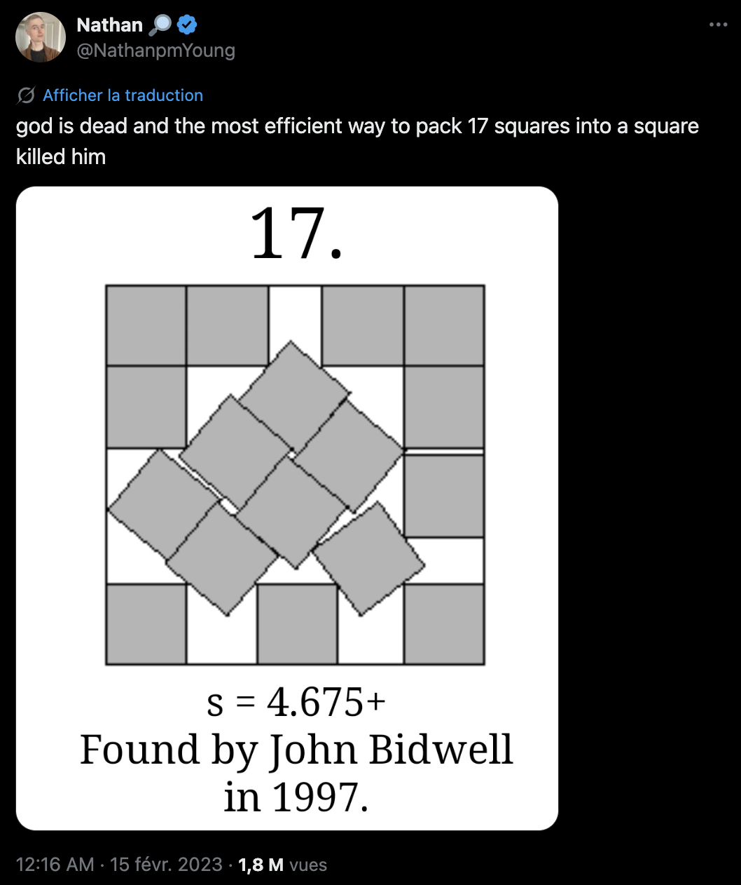

While working on tests for the sparkle library, I stumbled on the excellent Erich Friedman's packing center. Since the 1990s, Erich has been maintaining a database of the best known polygon packings, showcasing side by side beautiful and cursed configurations. Around 2023, square packings went viral for a time, triggering some funny posts:

Figure 1: The trend.